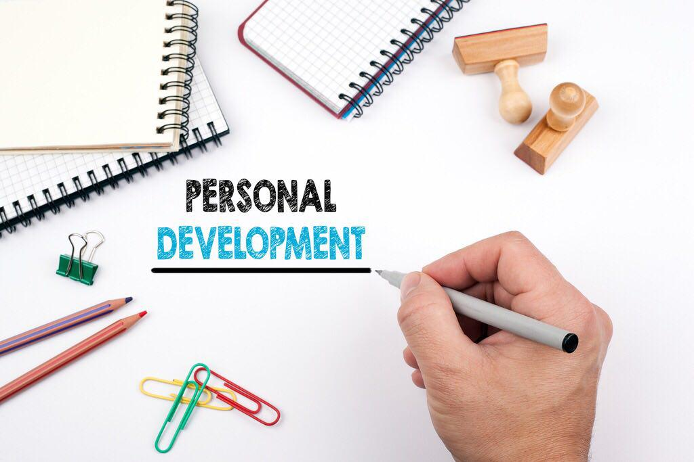

Introduction to A2 develpoing a personal progression plan
I have been asked to look for work experience opportunities and/or progression routes from my course. I will need to match my current skills with those needed by a potential employer to check whether I match the criteria needed for the position. Following this, I can then decide if it would be realistic to apply for the course or job, if I would need to develop other skills befor I could apply or if the course or job is not appropriate.
I have been asked to look for work experience opportunities and/or progression routes from my course. I will need to match My current skills with those needed by a potential employer to check whether you match the criteria needed for the position Following this, you can then decide if it would be realistic to apply for the course or job, if you would need to develop other skills before you could apply or if the course or job is not appropriate.
